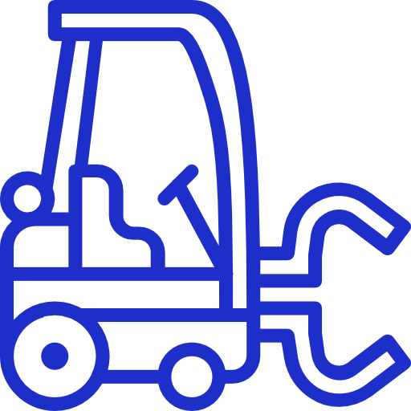

MyPersonal Website
I utilized HTML5, CSS3, JavaScript, JQuery, and Bootstrap to create a responsive, attractive website.
I have always loved being creative and designing. Website development was always something that fascinated me because,
just like any other coded program, it made no sense to me how someone could create such a beautiful looking wesbite. I started
looking into this once I got to univsersity and realized it was easy to learn but would take some time to master. I used
W3Schools to teach myself the different languages used in web development and found some inspiration to create this website.
I really enjoyed the experience because I got to be creative and imagine different designs. I also learned a great deal about web development
and hope to create more websites but for different reasons.

Automated Forklift
One of my class projects was to use the LEGO NXT kits to produce a protoype based on real life events or scenarios.
My group and I decided to focus on the automation of forkilifts in warehouse environments. The reason for this was because
we believed this would lead to safer environments for the workers and more efficeint. We used ROBOTC (which is very similar to C++)
to program the robot. We used LEGOS to build the mechanical body of the robot and sensors provided to allow the robot to detect its surroundings.
We used the touch sensor (in case it hit a wall), the color sensor (to differentiate between items that need to be picked up and those that don't),
the utrasonic sensor (to detact objects in its path), and motors to allow the robot to move around and lift and lower the forklift. The fork itself was
3D modelled using SolidWorks and then 3D printed. From this project, I imporved my programming experience, my 3D modelling skills, and learned
how to create a functional prototype of an idea.
One of the earliest projects I started once I was taught SolidWorks was to create a 3D model of a Fomula 1 Car.
I am a very big fan of Formula 1 and not only because the cars go at unimaginable speeds. I am a huge fan because of how the engineers
build the car so that it can go 0-100km/hr-0 in 3 seconds. The amount of precision and detail required to create such a monster
is what pulled me into this sport. Also, they sound amazing. Seeing what these engineers do and build is what inspired me to join
mechanical engineering and I hope one day I can be a part of it. Working on this project I greatly improved my SolidWorks skills. I learned
how to use features I did not learn in school (for example the loft feature), and I improved my isometric thinking ability. To create the look
and size I needed, I created simple drawings to create a base I could work from. Using my imagination and inspiration from the internet, I
was able to create 3D models of the rear wing, wheels, rims, and underbody. The project is still in process and I hope to finish very soon.
My first coop term was spent at Elite Machining in the summer of 2017. Elite Machining is a manufacturing company
that creates many different parts for a diverse range of industries, mainly oil and gas. I was hired to be an Engineering Intern,
however since this was my first ever job, I did not do much engineering work until the end of the term. First, I
learned how to handle the inventory room. This involved managining inventory shortages, pulling parts from inventory
when people needed, and purchasing parts when needed. From this, I learned a great deal about procurement engineering
because often I would purchase specific tools that would work for the paticular feature of a part. I also learned how to
use the inventory software (E2) Elite Machining used. Through this I was able to create purchase orders, along with
other forms, and send them to their respective sales team. I also was heavily involved in assisting shipping finished parts to
the customers. Here, I had to ensure the part was engraved properly, based on the customer's purchase order number and part number.
I would then procure the proper shipping containers needed, package the parts, and create the forms needed before having them shipped.
I was also trained in the use of the TRUMPF Vector Laser marking machine which I used to laser engrave tools (with the company's part
number) and parts being shipped to customers. Working with the laser machine I had to ensure I paid close attention to what I engraved
and the location. I had to follow the specifications found on the customer's drawing sheets to determine what needs to be marked and where.
At Elite Machining, I was also in charge of the HANEL, the company's main tooling storage system. I had to organize the shortage unit,
laser engrave the tools, and update the system. Through this, I learned what different tools are and what they are used for. Lastly,
before my work term finsihed, I was trained in Quailty Control. I learned about Milling Certificates, how to use different tools
to measure different features, and how to follow ballon drawings. I was also trained in the operation of, and also creating programs for,
the Coordinate Measuring Machine (CMM). Although some of my work at Elite Machining was tedious, I learned a great deal from here
and got great exposure to the processes involved in the manufacturing industry.
Waterloo Formula Electric SAE
Powertrain Member
Oct 2016 - Present
I joined the Waterloo Formula Electric team because of my love for cars and motorsports. I am a big fan Formula 1 but I did
not join the gas powered car team because, in the future, I want to work in the re-newable resources industry. One of my major
goals is to work for TESLA and so being part of this team, I am able to gain valuable experience that will help me achieve this
dream. Within this team, I am part of the Powertrain section. I have assisted with the setup of DYNO testing, which
they use to test the torque and power generated by the electric motor. I have also assisted in 3D modelling a new
gasket for the electric motor and source out a company to purchase the material needed. Also, I have helped organize their
small tools and setting up the chassis. Being part of this team, I am learning a lot about how to apply what I learn in
school to real life events. I know being part of this team will pay off in helping me reach my goals.